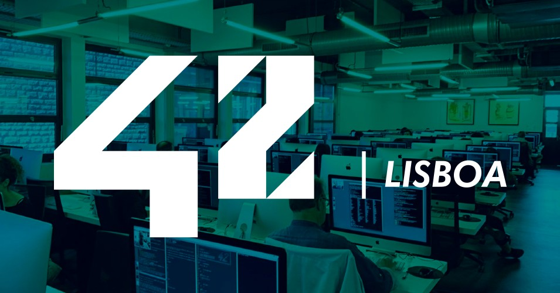

@anlima
This portfolio aims to document and show my progress during the 42 course. Here, I will link my completed and ongoing projects, as well as document my journey through the common core of 42 Lisboa.
📚 Libft
Libft is a project about coding a C library.
This project is about coding a C library, understanding the way some functions work, implementing and learning to use them.
@libft🖨 Printf
Because putnbr and putstr aren’t enough.
This aim of this project is to recode the printf function and learn how to use variadic arguments.
@printf📄 Get_next_line
Reading a line on a fd is way too tedious.
This aim of this project is to code a function that reads from a file descriptor, returns a line and to learn about static variables.
@get_next_lineBorn2BeRoot
A System Administration related exercise.
This project aims to be an introduction to the wonderful world of virtualization. The use of VirtualBox (or UTM) is mandatory.
@born2beroot